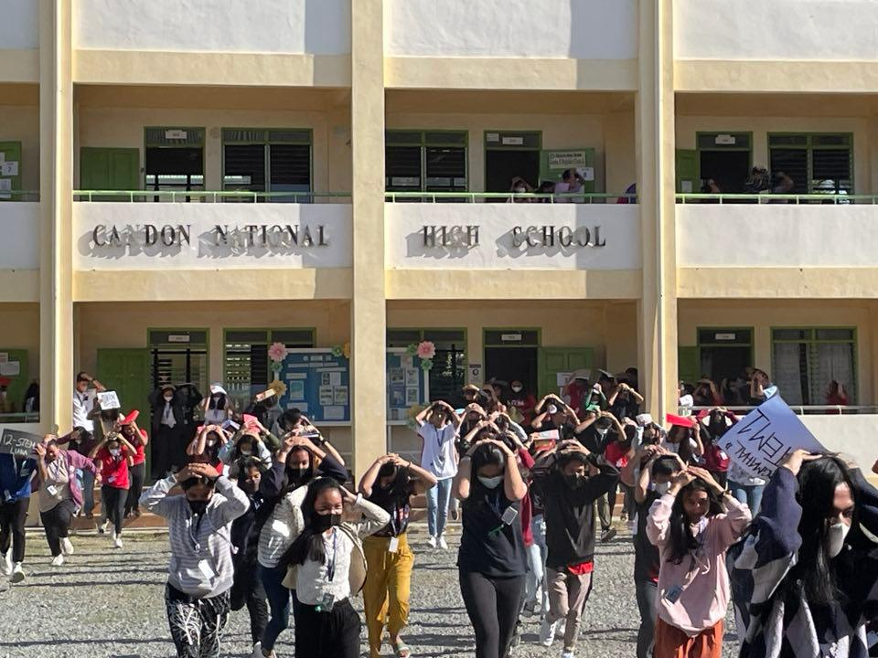

Nakiisa ang mga mag-aaral, guro, at kawani ng Candon National High School (CNHS) sa naganap na 4th quarter National Simultaneous Earthquake Drill (NSED) bilang bahagi ng layunin ng National Disaster Risk Reduction and Management Council (NDRRMC) na pagpapalakas sa kahandaan ng mga paaralan sakaling tumama ang lindol.

DUCK, COVER, AND HOLD. Isinagawa ang earthquake drill sa CNHS upang maihanda ang mga estudyante sa maaring pagdating ng lindol noong ika-17 ng Prebrero, 2023. (Kuha ni William Sherryl)
ni John Rainier Pizarro
Sa eksaktong 9:00, umaga ng ika-17 ng Pebrero, pinatunog ang mga school alarm, hudyat ng pagsisimula ng drills at exercises bilang paghahanda sa sakunang maaring idulot ng lindol. Isinagawa ng mga mag-aaral mula baitang 7 hanggang baitang 12 ang ‘Duck, Cover, and Hold’ drill sa kani-kanilang mga silid-aralan bago pumunta sa CNHS grounds at oval.
Ayon kay Aries J. Alban, Earthquake Drill Facilitator, napakahalaga ng earthquake drill para mapataas ang kaalaman, kahandaan, at kaligtasan ng mga mag-aaral sa posibleng pagkakaroon ng sakuna katulad ng lindol.
Ayon kay Alban, mahalaga ang ginagawang ito (earthquake drill) para ang mga mag-aaral ay maging ligtas sakaling tumama ang lindol na hindi alam kung kailan mangyayari, lalo na ang ‘The Big One’.
Kamakailan ay naging sentro ng pagyanig ang Tayum, Abra noong ika-27 ng Hulyo na may lakas na 7.0 manitude quake, at kasali ang Ilocos Sur sa mga apektado ng paglindol na ito kaya maganda ang gawaing ito upang maihanda ang lahat lalo na ang mga estudyante at guro na nagsibalik na sa face-to-face classes.
Isa sa mga naapektuhan sa nangyaring lindol ay ang mga gusali ng CNHS, kabilang dito ang PAGCOR building na labis na naapektuhan kaya ito ay permenenteng isinara at hindi magamit ng mga mag-aaral, kabilang din sa may pinsala ay ang Eric Singson/Maceda building ngunit ito ay nagagamit pa rin.
Kaugnay nito, tiniyak ng pamunuan ng paaralan ang pagpapatupad at pagsunod ng mga mag-aaral sa minimum health protocols habang isinasagawa ang nasabing programa bilang pag-iingat sa sakit na COVID.